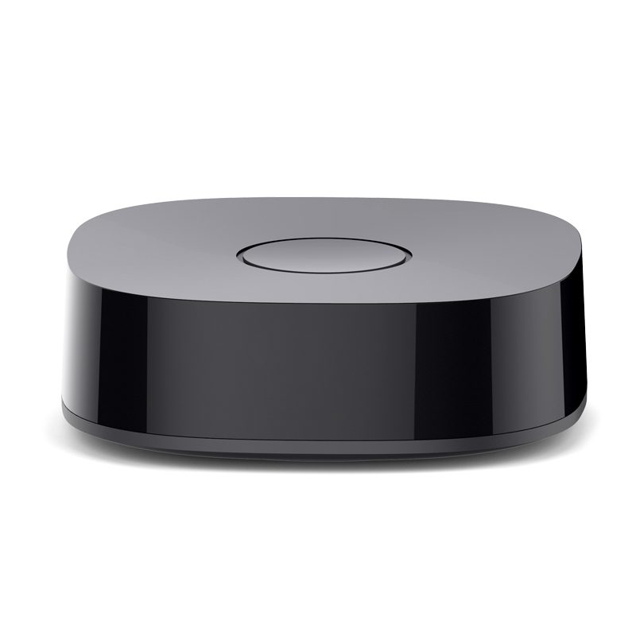
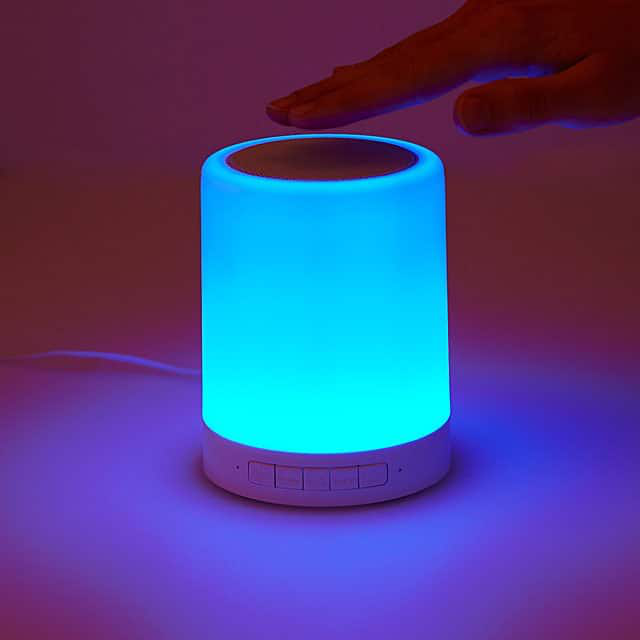

{{d.name}}
{{d.pi_id}}

{{imodule.name}}
{{imodule.pi_id}}

{{mmodule.name}}
{{mmodule.pi_id}}

Door Lock
{{lmodule.serial_number}}
To add New Module goto your WiFi settings of Your Device
Supply power to THomes Module.Your module has created a temporary Wi-Fi hotspot.To set it up,connect to it in the Wi-Fi settings by following these steps below:
- Go to settings > Wi_fi
- Come back to the to app to proceed with the set up
Connect to the Wi-Fi hotspot for THomes module that you are setting up.
Next Button Will redirect to a Link. After navigating to the link and setting up SSID password.Please restart your app